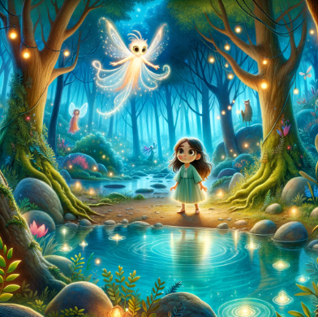

En el Bosque de las Luces, las flores brillaban de noche y los árboles cantaban con el viento. Allí vivía Lila, un hada con alas muy, muy pequeñas. Todas las hadas volaban alto. Lila no. Sus alas solo le servían para dar saltitos cortos. Pero eso no era lo peor. Lo peor era el Gran Árbol. El Gran Árbol estaba enfermo. Sus hojas, antes doradas, ahora caían grises al suelo. Sin él, el bosque perdía su luz. —Solo la Flor de Cristal puede curarle —dijo la vieja lechuza—. Crece en la cima de la Montaña de Cristal. Lila tragó saliva. Ella ya había intentado subir esa montaña una vez. No llegó ni a la mitad. Se sentó en una roca, miró hacia arriba y volvió a casa. Pero ahora el Gran Árbol la necesitaba. —Iré yo —dijo Lila con voz pequeña. Nadie más se ofreció. Lila empezó a caminar al amanecer. El sendero estaba lleno de piedras que brillaban como caramelos de colores. Bonito, sí. Pero empinado. Al rato, oyó un ruido detrás de ella. Cric, cric, cric. Era un caracol. Un caracol verde que cambiaba a azul con cada paso. —¿Tú también subes? —preguntó Lila. —Sí —dijo el caracol—. Voy despacio. Pero voy. —¿Cómo te llamas? —Roco. Lila sonrió. Siguieron juntos. Lila caminaba. Roco iba detrás, sin prisa, sin pausa. Cuando Lila se paraba a descansar, Roco la alcanzaba. Siempre. A mitad de camino, el aire cambió. Una niebla oscura cubrió el sendero. Era espesa y fría. Lila sintió las piernas pesadas. —Siéntate —susurró la niebla—. Estás cansada. Esto es muy difícil para ti. Era la Sombra Dormida. Lila lo sabía. La última vez, le hizo caso. Se sentó y bajó. Lila miró a Roco. El caracol avanzaba dentro de la niebla. Pasito. Pasito. Pasito. Su caparazón brillaba verde, luego azul, luego verde otra vez. —Si Roco puede, yo puedo —se dijo Lila. Dio un paso. Las piernas le pesaban. Dio otro. La Sombra le susurraba al oído. Dio otro más. Y otro. Entonces la niebla se hizo más espesa. Roco se detuvo. Sus colores se apagaron. Se quedó dormido dentro de su caparazón. —¡Roco! —gritó Lila. Pero Roco no se movía. Lila estaba sola. Miró hacia arriba. La cima brillaba muy lejos. Miró hacia abajo. El camino de vuelta era fácil. Cuesta abajo. Sin niebla. Le temblaban las manos. Tenía ganas de llorar. Pero pensó en el Gran Árbol. Pensó en Roco, que nunca paraba. Pensó en todas las hadas del bosque. —Un paso más —se dijo—. Solo uno más. Y lo dio. Y luego otro. Sus alas pequeñas empezaron a moverse solas. No volaba. Pero cada aleteo la empujaba un poquito hacia arriba. Un poquito más. Un poquito más. La Sombra gritó. El viento sopló. Lila cerró los ojos y siguió. Cuando abrió los ojos, estaba en la cima. Allí, entre rocas de cristal, brillaba una flor blanca. Era pequeña. Como las alas de Lila. Pero brillaba con tanta fuerza que la niebla empezó a deshacerse. Lila arrancó la flor. La luz se extendió montaña abajo como un río. La Sombra desapareció con un susurro. Y Roco despertó. Su caparazón brillaba con todos los colores a la vez. —¿Lo has conseguido? —preguntó. —Sí —dijo Lila—. Paso a paso. Bajaron juntos. Lila puso la flor entre las raíces del Gran Árbol. Las hojas grises se llenaron de dorado. El bosque entero volvió a brillar. Esa noche, las hadas celebraron una fiesta. Lila no voló alto como las demás. Bailó en el suelo, junto a Roco, bajo las hojas doradas del Gran Árbol. Y sus alas pequeñas brillaron más que ninguna.

Autor: Eva María Rodríguez
Volver al inicio